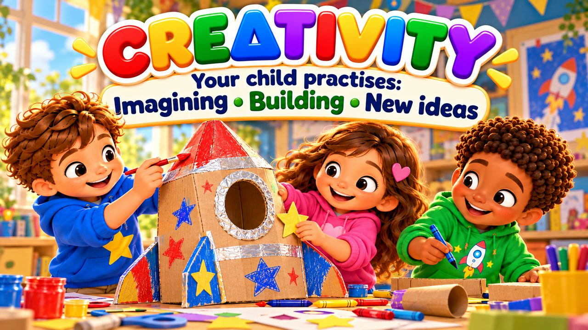
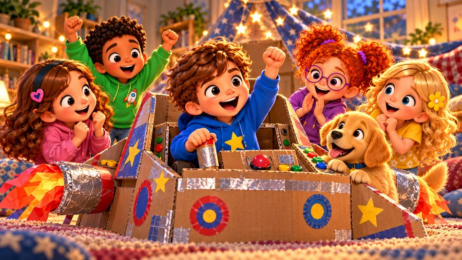
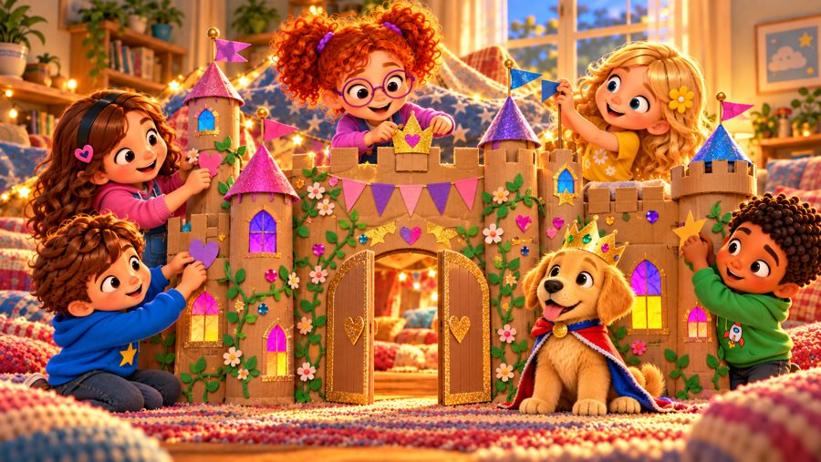
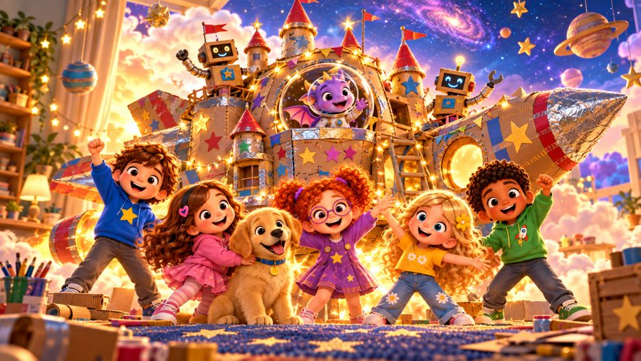
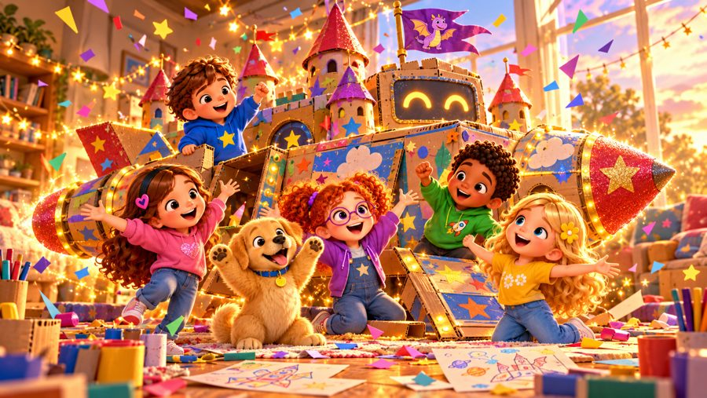

Imagine What We Can Make
An ordinary cardboard box can become a rocket, a castle or a robot! 🚀 Sing along with Max, Mia, Jay, Lily, Rosie and Buddy as they imagine, combine ideas and try something new.
For children ages 3–8, at home or in the classroom. Karaoke lyrics on screen.

▶💡 Why this skill matters: creativity
Creative play gives children opportunities to explore possibilities, combine ideas and try new approaches. Offer simple safe materials, invite several different ideas and enjoy the process together without requiring one perfect result.
👨👩👧 What your child learns
- Imagining new possibilities
- Combining different ideas
- Trying, building and learning through play
- Creating together
💬 Talk about it after the song
- What could we make with a box and a cardboard tube?
- Can we combine two different ideas?
🏅 Quiz & Certificate
Watched the song together? Now read each question aloud — your child points to the right picture. Answer all 6 questions and your child earns a printable certificate!
🔒 The name is only used to draw the certificate on your device. We don't save or send anything.
You did it! 🎉
All 6 answers are right! Type your child's name to make the certificate.
🖨️ Free printables
Free for home and classroom use. Print on A4 or Letter paper.
🖼️ Scenes from the song






🎵 More songs


🎤 Lyrics – Imagine What We Can Make
Look!
It's just a box...
Or is it?
What could it be?
A rocket?
A castle?
A robot?
Hmm...
Imagine!
Max found a box
on the playroom floor.
"Just an empty box?"
Maybe something more!
He climbed inside
and looked around:
"Three... two... one...
BLAST OFF!"
Now the box
was a rocket ship,
Flying through space
on an amazing trip!
Jay grabbed a tube
and said with delight:
"This can be
our telescope tonight!"
A box and a tube
were all they could see...
But in their imaginations,
they could be anything!
Look at something
a different way.
Ask yourself:
"What could I make today?"
There isn't always
one right way...
Imagine,
create,
and play!
Imagine what we can make!
Imagine what we can do!
Start with one little idea...
Then add another one too!
Build it!
Draw it!
Change it around!
Turn something ordinary
upside down!
Try a new way!
Make something great!
There are so many things
we can create!
Think it!
Try it!
See what it can be!
Imagine what we can make...
when our ideas run free!
Rosie looked
at the very same box.
"I see a castle
with towers on top!"
Lily said,
"I'll make a door!"
Mia laughed:
"Let's add two more!"
Paper flags,
cardboard crowns,
Colorful windows
all around.
Jay said,
"Maybe a dragon lives here!"
Buddy barked—
"WOOF!"
Everyone cheered!
One little idea
became two...
Then three,
then four,
then something new!
Look at something
a different way.
Ask yourself:
"What could I make today?"
There isn't always
one right way...
Imagine,
create,
and play!
Imagine what we can make!
Imagine what we can do!
Start with one little idea...
Then add another one too!
Build it!
Draw it!
Change it around!
Turn something ordinary
upside down!
Try a new way!
Make something great!
There are so many things
we can create!
Think it!
Try it!
See what it can be!
Imagine what we can make...
when our ideas run free!
Then Mia found
some bottle-cap eyes.
"What if our box
became robot size?"
Max added arms,
Rosie added feet,
Jay made buttons
that looked really neat.
"Beep! Boop!"
The robot began
their pretend parade.
Then Lily stopped:
"Wait!
Why choose only one
of the things that we made?"
A rocket castle
with a robot crew...
A dragon astronaut
could live there too!
Everyone laughed:
"That's a crazy idea!"
Then Max said:
"Exactly!
Let's build it right here!"
See an empty box?
WHAT COULD IT BE?
Got one idea?
MAKE IT THREE!
Something didn't work?
CHANGE IT AROUND!
Need a new idea?
LOOK ALL AROUND!
Can I mix two ideas?
YES, YOU CAN!
Can my idea be different?
YES, IT CAN!
Does everything have one right way?
NO!
What can imagination do?
CREATE SOMETHING NEW!
Creativity doesn't mean
there is one perfect idea.
My idea can be different
from your idea.
And your idea
might help me
think of something new.
I can imagine.
I can experiment.
I can make a mistake
and change my plan.
Sometimes the silliest idea...
becomes the best one!
Imagine what we can make!
Imagine what we can do!
One little spark of an idea...
can grow into something new!
Build it!
Paint it!
Move things around!
Make a new world
from the things that we found!
Mix our ideas!
Give them a try!
Build a tall castle
that can fly through the sky!
Think it!
Try it!
Change it!
Create!
There are so many things
our minds can make!
Different ideas?
LET THEM BE!
There's no limit
to what we can see!
Imagine!
Create!
Explore!
Play!
Let's make something
amazing today!
It was only a box...
Or maybe...
a rocket...
a castle...
a robot...
or something
nobody has imagined yet!
What can you make?